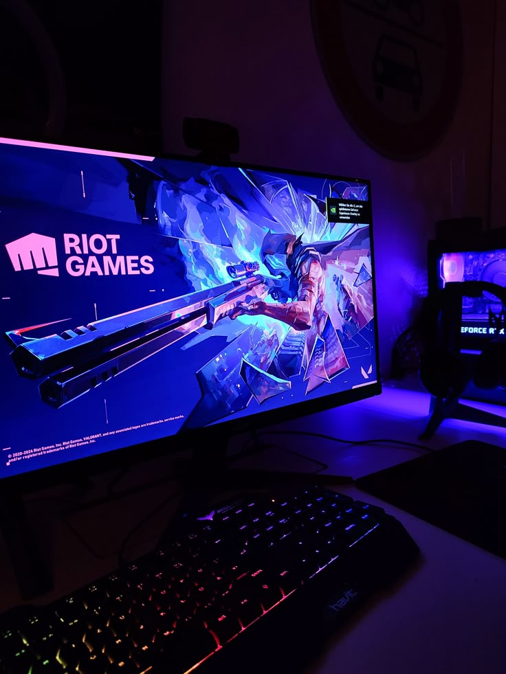

Kuantum Fiziği:
Modern fiziğe ve evrenin çalışma prensiplerine ve kuantum bilgisayarlarınaolan merakım nedeniyle kuantum fiziği üzerine okumalar yapıyorum.Spor:
Bir kaç farklı spor dalı ile ilgileniyorum.-
1. Yüzme
İlkokul birinci sınıftan itibaren uzun yıllar boyunca profesyonel olarak yüzme ile ilgilendim ve birçok farklı müsabakada yer aldım. Şu an aktif olarak devam edemesem de yüzme, hayatım boyunca en büyük tutkum ve yapmaktan en çok keyif aldığım spor dalı oldu.
2. Taekwondo
Ortaokulda tekvandoya başladım ve çok sayıda maça çıkıp madalyalar kazandım. Türkiye şampiyonalarında ilk 8'e girmeyi başardım. LGS süreciyle bırakmış olsam da o maçlardaki hırs ve tempo bana çok şey kattı.
3. Fitness
Şu an aktif olarak devam ettiğim bu süreç, yoğun ders temposu arasında kendime ayırdığım en verimli zaman dilimi. Kendi disiplinimi belirlemek bana büyük motivasyon sağlıyor.
Video Oyunları
Oyun dünyasını hem bir hobi hem de yazılımsal bir tasarım süreci olarak takip ediyorum. Özellikle "Escape the Backrooms" gibi bulmaca çözme mekanikleri ve algoritma mantığı üzerine kurulu oyunlar, bilgisayar mühendisliği vizyonuma farklı bir bakış açısı katıyor.

Yazılım Geliştirme
Mühendislik eğitimimin bir parçası olarak C# ve web teknolojileri üzerinde projeler geliştiriyorum. Gelecekte kuantum bilgisayarları ve oyun geliştirme alanında uzmanlaşmayı hedefliyorum.